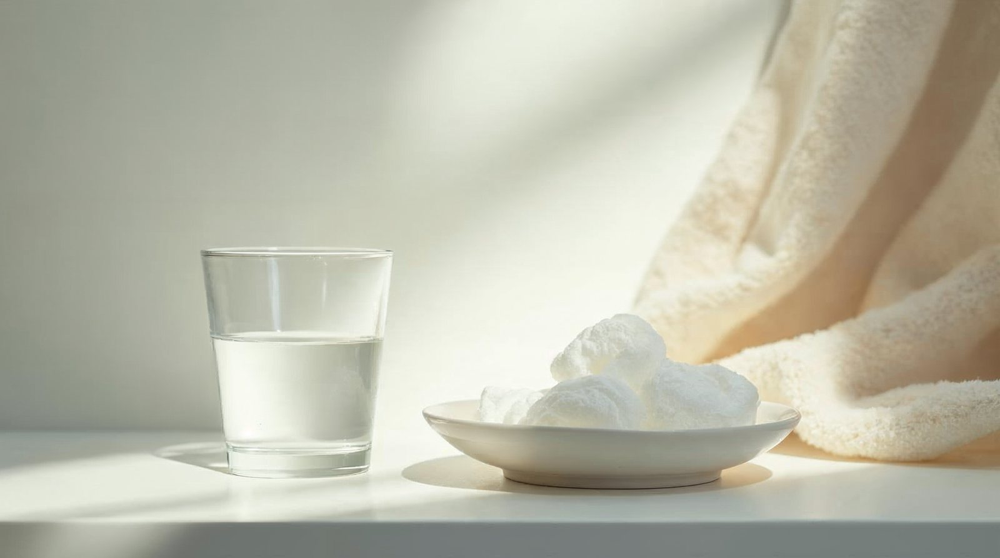
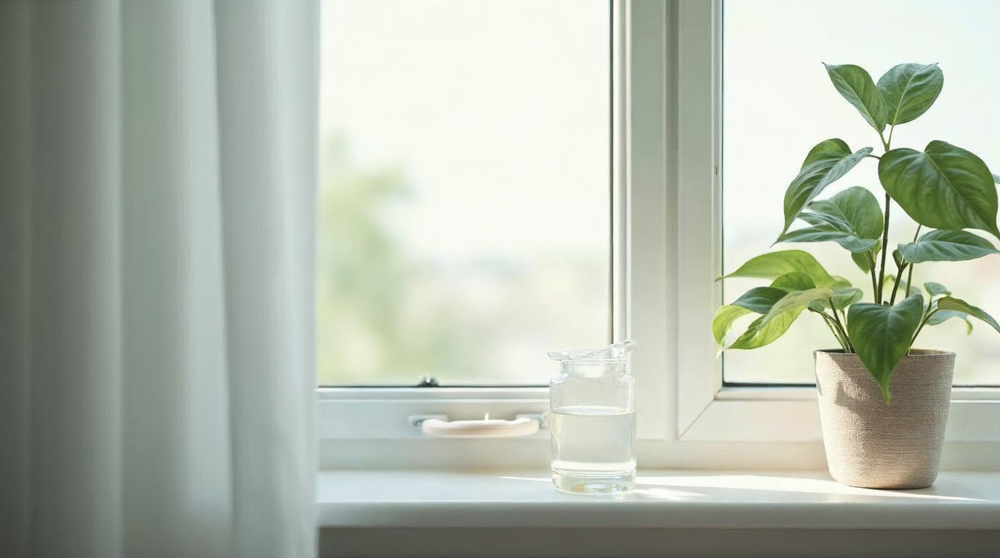
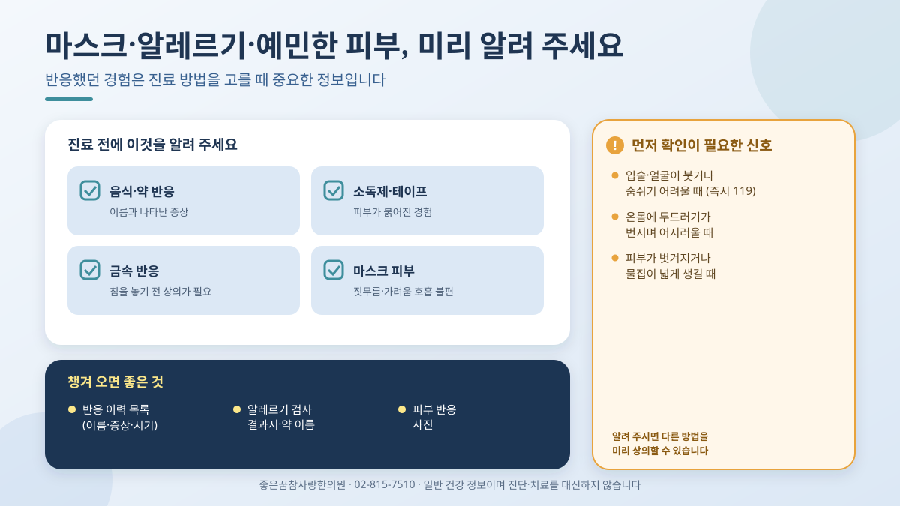

이종호 한의사 감수좋은꿈참사랑한의원 대표원장 (한의사 면허번호 19769)발행 2026-11-23 · 수정 2026-11-26
이 글의 차례
- 왜 미리 알려 주시면 좋을까요
- 자주 하는 오해
- 예를 들면 이런 경우입니다
- 알레르기와 단순한 자극은 어떻게 다를까요?
- 왜 마스크 자리가 짓무를까요
- 먼저 이렇게 여쭙니다
- 스스로 점검해 보세요
- 오시는 길과 진료 시간
- 방문 전에 먼저 해 볼 수 있는 것
- 한의원에서 함께 살필 수 있는 경우
- 언제 지켜보고, 언제 바로 진료받을까요
- 이렇게 기록해 오시면 상담이 쉬워집니다
- 침과 약침, 테이프를 받기 전에는 무엇을 확인하나요?
- 왜 한약 상담 전에 알레르기 정보가 중요할까요
- 마스크를 오래 쓰는 날의 피부 요령
- 계절마다 달라지는 피부, 이렇게 지켜보세요
- 아이나 어르신의 반응은 어떻게 적을까요?
- 피부가 예민한 날의 생활 습관
- 처음 말씀하실 때는 이렇게 시작해 보세요
- 이런 증상은 먼저 확인이 필요합니다
- 함께 읽으면 좋은 글
피부가 예민하거나 알레르기가 있다면 진료 전에 꼭 알려 주세요. 침을 놓기 전 소독, 테이프, 한약 재료까지 작은 정보 하나가 방법을 고르는 기준이 될 수 있습니다. 무엇에, 언제, 어떤 반응이 있었는지를 한 장에 적어 접수 때 건네 주시면 진료실에서도 빠뜨리지 않고 확인할 수 있습니다.
왜 미리 알려 주시면 좋을까요
- 소독제나 반창고 테이프에 피부가 붉어졌던 분은 다른 방법을 고를 수 있습니다.
- 금속에 반응한 적이 있다면 침을 놓기 전에 상의가 필요합니다.
- 음식이나 약에 반응한 경험은 한약 재료를 고를 때 중요한 정보가 됩니다.
- 마스크를 오래 쓰면 피부가 짓무르거나 가려운 분도 있어 진료 중 불편을 덜 방법을 함께 찾습니다.

자주 하는 오해
- 한약은 자연에서 온 재료라 알레르기와 상관없다고 여기기 쉽지만, 식물이나 음식에 반응하는 분은 한약 재료에도 반응할 수 있어 미리 알려 주셔야 합니다.
- 오래전 일이라 지금은 괜찮을 거라 생각하기 쉽지만, 몇 년 전 반응이라도 이름과 증상을 알려 주시면 처치를 고르는 데 도움이 됩니다.
- 가벼운 가려움은 말할 정도가 아니라고 여기기 쉽지만, 테이프 자리나 소독 부위가 붉어졌던 경험은 작은 것이라도 알려 주시면 도움이 됩니다.
- 알레르기가 있으면 한의원 치료를 받을 수 없다고 걱정하기 쉽지만, 반응하는 것을 알려 주시면 그에 맞춰 방법을 조정합니다.
예를 들면 이런 경우입니다
- 하루 종일 마스크를 쓰고 일하는 직장인이라면, 마스크 끈이 닿는 귀 뒤나 볼이 짓무르는지, 어떤 재질에서 더 심한지 적어 오시면 상담이 쉬워집니다.
- 파스나 밴드를 붙인 자리가 자주 붉어지는 어르신이라면, 그 사실을 먼저 알려 주시면 테이프를 쓰지 않는 방법을 고를 수 있습니다.
- 견과류나 특정 과일에 반응한 적이 있는 수험생이라면, 한약 상담 전에 반응한 음식 이름을 메모해 두세요.
알레르기와 단순한 자극은 어떻게 다를까요?
피부가 붉어졌다고 해서 모두 알레르기는 아닙니다. 마스크 끈처럼 계속 문질러지는 자리에만 생기고 벗으면 금방 가라앉는다면, 마찰이나 습기 같은 자극 쪽일 수 있습니다.
반면 닿은 지 하루 이틀 지나 가려움이 시작되거나, 닿았던 자리보다 넓게 번진다면 알레르기 반응일 가능성도 생각해 봅니다. 다만 둘을 겉모습만으로 가르기는 쉽지 않아, 혼자 단정하기보다 언제 어떻게 생겼는지를 적어 와 주세요.
왜 마스크 자리가 짓무를까요
마스크 안쪽은 숨을 쉴 때마다 습기가 차서 피부가 늘 축축한 상태가 됩니다. 여기에 말하거나 고개를 돌릴 때마다 천이 피부를 문질러 겉이 약해지기 쉽습니다.
귀 뒤는 끈이 오랜 시간 같은 자리를 누르면서 붉어지고 따가워지기도 합니다. 땀을 흘린 뒤 바로 닦지 못하거나, 같은 마스크를 오래 쓰는 날에는 더 예민해질 수 있습니다.
먼저 이렇게 여쭙니다
- 음식이나 약에 반응한 적이 있다면 이름과 증상은 무엇인가요?
- 소독제, 금속, 밴드나 테이프에 피부가 붉어진 경험이 있나요?
- 마스크를 오래 쓰면 피부나 호흡이 불편해지나요?
- 환절기에 코막힘이나 가려움이 심해지나요?
스스로 점검해 보세요
방문 전에 아래 항목을 확인해 보세요.
- 반응한 음식, 약, 소독제, 금속, 테이프의 이름을 적었다
- 반응이 있었던 시기와 나타난 증상(붉어짐, 가려움, 붓기, 두드러기)을 적었다
- 지금 먹거나 바르는 알레르기 약 이름을 확인했다
- 알레르기 검사 결과지나 피부 반응 사진이 있다면 챙겼다
- 마스크를 쓰는 시간과 불편해지는 부위를 적어 두었다
- 진료 중 가렵거나 따가우면 바로 말하겠다고 마음먹었다
이 목록은 한 번 만들어 두면 다른 의료기관에 갈 때도 그대로 쓸 수 있습니다. 새로 반응한 것이 생기면 그때그때 날짜와 함께 덧붙여 두세요. 가족 가운데 비슷한 반응이 있는 분이 있다면 그 내용도 한 줄 적어 오시면 참고가 됩니다.
오시는 길과 진료 시간
- 상도역 3번 출구로 나와 약 200m 직진한 뒤, 오거리에서 우회전해 약 200m 오시면 됩니다.
- 노량진역 쪽에서는 3번 출구에서 마을버스 동작01을 타고 신동아리버파크에서 내리시면 됩니다.
- 진료 시간은 평일 09:30~20:00(점심 13:00~14:00), 토·일·공휴일 09:30~15:00입니다. 그 밖에 궁금한 점은 방문 전 전화(02-815-7510)로 확인해 주세요.
방문 전에 먼저 해 볼 수 있는 것
- 반응한 음식·약 이름과 나타난 증상 적기
- 알레르기 검사 결과지나 처방받은 알레르기 약 이름 챙기기
- 피부 반응 사진이 있다면 휴대폰에 저장해 두기
- 마스크 접촉 부위가 짓무르면 순한 보습제를 쓰고 쓰는 시간 나누기
한의원에서 함께 살필 수 있는 경우
- 마스크 접촉 부위가 가렵고 붉어질 때 사용 시간과 환경을 함께 묻습니다.
- 환절기에 코막힘과 재채기가 잦을 때 생활 환경을 함께 살핍니다.
- 처치 도구나 재료에 피부 반응이 걱정될 때 사용 방법을 미리 상의합니다.
좋은꿈참사랑한의원에서는 치료 방법을 정하기 전에 알레르기와 피부 반응 이력을 확인하고, 그에 맞춰 침과 약침, 테이프 사용, 한약 재료를 조정합니다. 진찰한 뒤 방법을 정하며, 진료 중 가렵거나 따가우면 바로 말씀해 주시면 됩니다.
첫 방문이라면 모든 분께 그렇듯 맥부터 짚고, 맥을 짚으면서 반응 이력과 지금 불편한 곳을 여쭙습니다. 필요하면 혀와 배도 함께 살핍니다.
적어 오신 반응 목록과 사진을 함께 보고, 오늘 쓸 방법과 피할 재료, 그 이유를 설명해 드립니다. 처치 뒤 집에서 피부가 붉어지거나 가려우면 어떻게 하고 언제 연락할지도 함께 알려 드립니다.
언제 지켜보고, 언제 바로 진료받을까요
- 테이프 자리가 살짝 붉어진 정도라면 떼고 하루 이틀 지켜보며 사진을 남겨 두세요.
- 붉어진 자리는 긁지 말고, 다음 날 아침에 한 번 더 보며 범위가 넓어졌는지 비교해 보세요.
- 붉어짐이나 가려움이 3일 넘게 이어지거나 넓어지면 한의원이나 피부과에 연락해 상의하세요.

이렇게 기록해 오시면 상담이 쉬워집니다
반응 이력은 한 줄에 한 가지씩, 다섯 칸으로 나누어 적으면 보기 좋습니다.
- 무엇에: 예) 반창고 테이프, 알코올 솜, 니켈 귀걸이, 특정 과일
- 언제: 예) 작년 여름, 몇 년 전 치과 치료 뒤
- 어떤 반응: 붉어짐, 가려움, 붓기, 두드러기, 물집 가운데 해당하는 것
- 얼마나: 몇 시간 만에 사라졌는지, 며칠 갔는지
- 어떻게 가라앉았나: 그냥 두었는지, 약을 발랐는지, 병원에 갔는지
여기에 복용 중인 알레르기 약이나 바르는 약, 피부가 심해지는 계절과 환경, 반응이 있었을 때의 사진을 더해 주세요.
피부과나 내과에서 알레르기 이야기를 들은 적이 있다면 처방받은 약 이름이나 검사 결과지를 사진으로 찍어 오셔도 됩니다. 정확히 기억나지 않으면 기억나는 만큼만 말씀해 주셔도 괜찮습니다.
침과 약침, 테이프를 받기 전에는 무엇을 확인하나요?
침을 놓기 전에는 피부를 소독합니다. 소독제나 알코올 솜에 붉어지거나 따가웠던 적이 있다면 미리 말씀해 주세요. 금속 귀걸이나 시계 줄에 반응한 적이 있는 분도 알려 주시면 함께 상의합니다.
약침은 약침액을 몸에 넣는 치료라 더 꼼꼼히 여쭙습니다. 약물·음식 알레르기, 복용 중인 약(특히 혈액을 묽게 하는 약), 당뇨나 간·신장 질환, 임신 가능성을 먼저 알려 주세요.
약침 뒤에는 드물게 알레르기 반응이 생길 수 있어, 시술 전에 설명해 드리고 시술 뒤 이상이 있으면 바로 연락해 주시도록 안내합니다.
치료 뒤 테이프를 붙이는 경우에는 반창고나 파스에 반응한 적이 있는지도 확인합니다. 온열 같은 물리치료를 받으실 때는 피부 감각이 둔하거나 몸에 금속·심박조율기가 있으면 먼저 알려 주세요. 하나라도 걸리는 것이 있으면 다른 방법을 함께 고릅니다.
왜 한약 상담 전에 알레르기 정보가 중요할까요
한약은 여러 약재를 함께 달여 만들기 때문에, 반응한 적이 있는 음식이나 식물의 이름은 처방을 정하기 전에 꼭 확인합니다. 저는 주된 증상과 함께 소화·수면·체온·대소변, 복용 중인 약, 간·신장 상태까지 듣고 처방을 정합니다.
복용 중인 알레르기 약이나 바르는 약도 함께 알려 주세요. 양약과 한약을 같이 드실 수 있는 경우가 많지만, 드시는 약을 모두 알아야 겹치는 부분을 확인할 수 있습니다. 처방받은 약은 처방한 의사와 상의 없이 줄이거나 끊지 마세요.
임신 중이거나 가능성이 있다면 먼저 말씀해 주시고 산부인과와도 상의해 주세요. 한약을 드시는 중에 가렵거나 두드러기가 올라오는 등 불편한 반응이 생기면 복용을 멈추고 연락해 주세요.
마스크를 오래 쓰는 날의 피부 요령
- 쉬는 시간에 마스크를 벗어도 괜찮은 곳에서는 잠깐씩 벗어 피부를 말려 주세요.
- 하루에 여러 장을 준비해 습기가 찬 마스크는 바꿔 씁니다.
- 세안은 미지근한 물로 문지르지 않고 부드럽게 하고, 물기를 두드려 닦은 뒤 순한 보습제를 바릅니다.
- 귀 뒤가 아프다면 끈 길이를 조절하거나 귀에 걸지 않는 고정 방식을 써 보세요.
- 재질에 따라 덜 불편한 경우가 있으니, 어떤 마스크에서 덜했는지 기억해 두세요.
계절마다 달라지는 피부, 이렇게 지켜보세요
봄가을 환절기에는 코와 눈, 피부가 함께 예민해지는 분이 많습니다. 여름에는 땀과 습기로 마스크 자리가 짓무르기 쉽고, 겨울에는 건조해서 갈라지고 따가워지기 쉽습니다.
달력에 피부가 예민했던 날을 표시해 두면, 해마다 비슷한 때 반복되는지 알 수 있습니다. 그 기록을 가지고 오시면 그 시기를 앞두고 생활에서 미리 챙길 점을 함께 이야기할 수 있습니다.
아이나 어르신의 반응은 어떻게 적을까요?
아이는 가려워도 말로 표현하지 못하고 긁거나 보채기만 할 때가 많습니다. 보호자께서 언제 긁기 시작했는지, 어디가 붉어졌는지를 사진과 함께 남겨 주세요.
어르신은 피부가 얇아 테이프를 뗄 때 쉽게 벗겨지거나 멍이 들기도 합니다. 예전에 파스나 반창고를 떼다 피부가 다친 적이 있다면 그것도 알려 주세요.
피부가 예민한 날의 생활 습관
저는 '잘 먹고, 잘 싸고, 잘 자고, 마음 편하고, 몸 따뜻하게' 다섯 가지를 몸이 회복하는 바탕으로 봅니다. 피부가 유난히 예민한 주라면 이 다섯 가지 가운데 무엇이 흔들렸는지 먼저 돌아봐 주세요.
그런 주에는 잠자리에 드는 시각을 지키고, 맵고 자극적인 음식이나 술을 조금 줄여 보세요. 그 주에 어떤 생활을 했는지 적어 오시면 진료 때 함께 살펴볼 수 있습니다.
자기 몸에서 언제 무슨 일이 일어나는지 가장 오래 지켜본 분은 바로 그 몸의 주인입니다. 그래서 저는 적어 오신 메모 한 장을 귀하게 봅니다. 다음에 오시면 지난 처치 뒤 피부가 어땠는지, 새로 반응한 것은 없었는지부터 여쭙겠습니다.
처음 말씀하실 때는 이렇게 시작해 보세요
반응 이력을 어디서부터 말해야 할지 막막하다면 '무엇에, 어떻게'만 한 문장으로 묶어 보세요. 예를 들어 "반창고를 붙이면 하루 뒤 그 자리가 가렵고 붉어져요. 복숭아를 먹으면 입 주변이 따가웠어요. 지금은 비염 약을 먹고 있어요."처럼 말씀해 주시면 충분합니다.
접수에서 한 번, 진료실에서 한 번 더 말씀해 주셔도 괜찮습니다. 같은 이야기를 두 번 하는 것이 번거로우실 수 있지만, 소독이나 테이프처럼 처치 직전에 정하는 일은 그 자리에서 다시 확인할수록 빠뜨릴 틈이 줄어듭니다.
긴가민가한 반응도 "잘 모르겠지만 이런 일이 있었어요"라고 말씀해 주세요. 알레르기인지 아닌지 가리는 일은 함께 하면 되고, 환자분은 겪은 일을 있는 그대로 전해 주시는 것으로 충분합니다.
적어 둔 메모가 있다면 말로 설명하기 전에 그대로 보여 주셔도 됩니다. 글로 보면 저도 빠뜨리지 않고 차례로 여쭐 수 있습니다.
이런 증상은 먼저 확인이 필요합니다
- 입술이나 얼굴이 붓거나 숨쉬기 어려운 반응
- 온몸에 두드러기가 번지거나 어지러운 경우
이런 신호가 있으면 한의원보다 가까운 병원이나 응급실을 먼저 찾으세요.
함께 읽으면 좋은 글

여쭙는 것
- 음식이나 약에 반응한 적이 있다면 이름과 증상은 무엇인가요?
- 소독제, 금속, 밴드나 테이프에 피부가 붉어진 경험이 있나요?
- 마스크를 오래 쓰면 피부나 호흡이 불편해지나요?
한의원에서 함께 살필 것
- 마스크 접촉 부위가 가렵고 붉어질 때 사용 시간과 환경을 함께 묻습니다.
- 환절기에 코막힘과 재채기가 잦을 때 생활 환경을 함께 살핍니다.
- 처치 도구나 재료에 피부 반응이 걱정될 때 사용 방법을 미리 상의합니다.
먼저 확인이 필요한 신호
- 입술이나 얼굴이 붓거나 숨쉬기 어려운 반응
- 온몸에 두드러기가 번지거나 어지러운 경우
한눈에 보는 표
| 구분 | 핵심 |
|---|---|
| 여쭙는 것 | 음식이나 약에 반응한 적이 있다면 이름과 증상은 무엇인가요? 소독제, 금속, 밴드나 테이프에 피부가 붉어진 경험이 있나요? |
| 한의원에서 함께 살필 것 | 마스크 접촉 부위가 가렵고 붉어질 때 사용 시간과 환경을 함께 묻습니다. 환절기에 코막힘과 재채기가 잦을 때 생활 환경을 함께 살핍니다. |
| 먼저 확인이 필요한 신호 | 입술이나 얼굴이 붓거나 숨쉬기 어려운 반응 온몸에 두드러기가 번지거나 어지러운 경우 |
자주 묻는 질문
알레르기가 있으면 치료를 받을 수 없나요?
그렇지 않으며 어떤 것에 반응하는지 알려 주시면 처치와 처방을 조정합니다.
알레르기 검사 결과가 없어도 되나요?
있으면 도움이 되지만 없어도 경험한 반응을 이야기하시면 됩니다.
마스크를 쓰고 진료받아도 되나요?
진료 안내를 따르시되, 답답하거나 피부가 불편하면 말씀해 주세요.
침 치료 뒤 피부가 붉어지면 어떻게 하나요?
붉어진 부위를 사진으로 남겨 두고 한의원에 연락해 주세요.
좋은꿈참사랑한의원은 재진 때 지난번 이야기부터 이어서 여쭙니다. 진료시간과 예약은 오시는 길에서 확인하세요.
어디서 상담받을 수 있나요?
좋은꿈참사랑한의원은 서울 동작구 만양로2길 2 신성빌딩 3층·5층(서울 동작구 상도동, 7호선 상도역 3번 출구 근처)에 있습니다. 한의사 3명(이종호 대표원장, 조영기 수석진료원장, 정원영 진료원장)이 진료합니다. 진료시간은 평일 09:30~20:00(점심 13:00~14:00), 토·일·공휴일 09:30~15:00이며, 방문 전 전화로 확인을 권합니다. 예약은 네이버 예약, 카카오톡 상담, 전화 02-815-7510로 받습니다.
이 글은 일반적인 건강 정보이며 개인의 진단이나 치료를 대신하지 않습니다. 증상이 있거나 복용 중인 약이 있다면 진료를 통해 확인하세요. 치료 효과는 개인마다 다를 수 있습니다.
작성 기준: 일반적으로 알려져 있는 건강 정보를 참고해 정리했습니다(대표원장 감수). 증상 기록은 1~2주 동안 하루 1회, 비슷한 시간에 적어 오시면 지난 상태와 비교하기 쉽습니다.